User and group management in jBPM and Drools Workbenches
Introduction
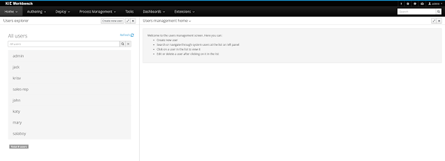 |
| User and group management |
Before the installation, setup and usage of this feature, this article talks about some previous concepts that need to be completely understood for the further usage.
- Security management providers and capabilities
- Installation and setup
- Usage
- This feature is included from version 6.4.0.Final.
- Sources available here.
Security management providers
In most of the typical scenarios the application’s security is delegated to the container’s security mechanism, which consumes a given realm at same time. It’s important to consider that there exist several realm implementations, for example Wildfly provides a realm based on the application-users.properties/application-roles.properties files, Tomcat provides a realm based on the tomcat-users.xml file, etc. So keep in mind that there is no single security realm to rely on, it can be different in each installation.
The jBPM and Drools workbenches are not an exception, they’re build on top Uberfire framework (aka UF), which delegates the authorization and authentication to the underlying container’s security environment as well, so the consumed realm is given by the concrete deployment configuration.
Security management providers
Due to the potential different security environments that have to be supported, the users and groups management provides a well defined management services API with some default built-in security management providers. A security management provider is the formal name given to a concrete user and group management service implementation for a given realm.
At this moment, by default there are three security management providers available:
- Wildfly / EAP security management provider – Realms based on properties files.
- Tomcat security management provider – Realms based on XML files.
- Keycloak security management provider – For the administration of Keycloak based realms. This provider is included as technical preview for the next 7.0 series, currently in development.
Security management providers‘s capabilities
Each security realm can provide support different operations. For example consider the use of a Wildfly’s realm based on properties files, The contents for the applications-users.properties is like:
admin=207b6e0cc556d7084b5e2db7d822555c
salaboy=d4af256e7007fea2e581d539e05edd1b
maciej=3c8609f5e0c908a8c361ca633ed23844
kris=0bfd0f47d4817f2557c91cbab38bb92d
katy=fd37b5d0b82ce027bfad677a54fbccee
john=afda4373c6021f3f5841cd6c0a027244
jack=984ba30e11dda7b9ed86ba7b73d01481
director=6b7f87a92b62bedd0a5a94c98bd83e21
user=c5568adea472163dfc00c19c6348a665
guest=b5d048a237bfd2874b6928e1f37ee15e
kiewb=78541b7b451d8012223f29ba5141bcc2
kieserver=16c6511893651c9b4b57e0c027a96075
As you can see, it’s based on key-value pairs where the key is the username, and the value is the hashed value for the user’s password. So a user is just defined by the key, by its username, it does not have a name nor address, etc.
On the other hand, consider the use of a realm provided by a Keycloak server. The information for a user is composed by more user meta-data, such as surname, address, etc, as in the following image:
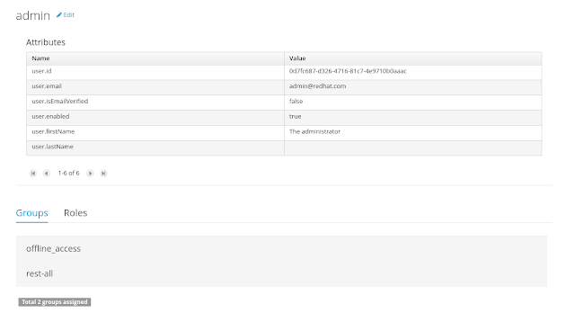 |
| Admin user edit using the Keycloak sec. management provider |
So the different services and client side components from the users and group management API are based on capabilities. Capabilities are used to expose or restrict the available functionality provided by the different services and client side components. Examples of capabilities are:
- Create user
- Update user
- Delete user
- Update user attributes
- Create group
- Assign groups
- Assign roles
- etc
Each security management provider must specify a set of capabilities supported. From the previous examples you can note that the Wildfly security management provider does not support the capability for the management of the attributes for a user – the user is only composed by the user name. On the other hand the Keycloak provider does support this capability.
The different views and user interface components rely on the capabilities supported by each provider, so if a capability is not supported by the provider in use, the UI does not provide the views for the management of that capability. As an example, consider that a concrete provider does not support deleting users – the delete user button on the user interface will be not available.
Please take a look at the concrete service provider documentation to check all the supported capabilities for each one, the default ones can be found here.
Installation and setup
Before considering the installation and setup steps please note the following Drools and jBPM distributions come with built-in, pre-installed security management providers by default:
- Wildfly / EAP distribution – Both distributions use the Wildfly security management provider configured for the use of the default realm files application-users.properties and application-roles.properties
- Tomcat distribution – It uses the Tomcat security management provider configured for the use of the default realm file tomcat-users.xml
If your realm settings are different from the defaults, please read each provider’s documentation in order to apply the concrete settings.
On the other hand, if you’re building your own security management provider or need to include it on an existing application, consider the following installation options:
- Enable the security management feature on an existing WAR distribution
- Setup and installation in an existing or new project (from sources)
NOTE: If no security management provider is installed in the application, there will be no available user interface for managing the security realm. Once a security management provider is installed and setup, the user and group management user interfaces are automatically enabled and accessible from the main menu.
Enable the security management feature on an existing WAR distribution
Given an existing WAR distribution of either Drools and jBPM workbenches, follow these steps in order to install and enable the user management feature:
- Ensure the following libraries are present on WEB-INF/lib:
- WEB-INF/lib/uberfire-security-management-api-6.4.0.Final..jar
- WEB-INF/lib/uberfire-security-management-backend-6.4.0.Final..jar
- Example: WEB-INF/lib/uberfire-security-management-wildfly-6.4.0.Final..jar
- If the concrete provider you’re using requires more libraries, add those as well. Please read each provider’s documentation for more information.
Setup and installation in an existing or new project (from sources)
Disabling the security management feature
he security management feature can be disabled, and thus no services or user interface will be available, by any of
- Uninstalling the security management provider from the application
When no concrete security management provider installed on the application, the user and group management feature will be disabled and no services or user interface will be presented to the user.
- Removing or commenting the security management configuration file
Removing or commenting all the lines in the configuration file located at WEB-INF/classes/security-management.properties will disable the user and group management feature and no services or user interface will be presented to the user.
Usage
The user and group management feature is presented using two different perspectives that are available from the main Home menu (considering that the feature is enabled) as:
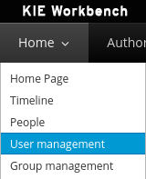 |
| User and group management menu entries |
Read the following sections for using both user and group management perspectives.
The user management interface is available from the User management menu entry in the Home menu.
The interface is presented using two main panels: the users explorer on the west panel and the user editor on the center one:
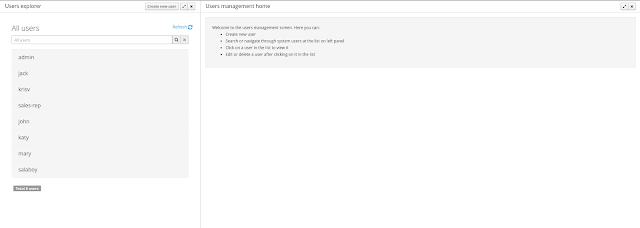 |
| User management perspective |
The users explorer, on west panel, lists by default all the users present on the application’s security realm:
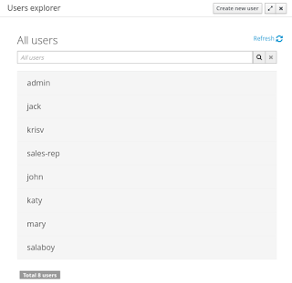 |
| Users explorer panel |
In addition to listing all users, the users explorer allows:
- Searching users
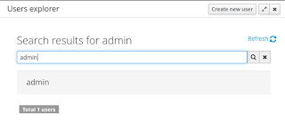
When specifying the search pattern in the search box the users list will be reduced and will display only the users that matches the search pattern.Search patterns depend on the concrete security management provider being used by the application’s. Please read each provider’s documentation for more information.
- Creating new users:
By clicking on the Create new user button, a new screen will be presented on the center panel to perform a new user creation.
The user editor, on the center panel, is used to create, view, update or delete users. Once creating a new user o clicking an existing user on the users explorer, the user editor screen is opened.
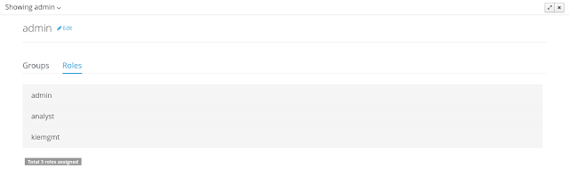 |
| Viewing the admin user |
| Using the Keycloak sec. management provider |
- The user name
- The user’s attributes
- The assigned groups
- The assigned roles
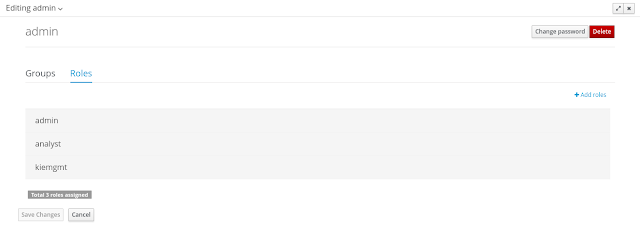 |
| Editing admin user |
- Update the user’s attributes
Existing user attributes can be updated, such as the user name, the surname, etc. New attributes can be created as well, if the security management provider supports it.
- Update assigned groups
A group selection popup is presented when clicking on Add to groups button:
This popup screen allows the user to search and select or deselect the groups assigned for the user currently being edited.
- Update assigned roles
A role selection popup is presented when clicking on Add to roles button:
This popup screen allows the user to search and select or deselect the roles assigned for the user currently being edited.
- Change user’s password
A change password popup screen is presented when clicking on the Change password button:
- Delete user
The currently being edited user can be deleted from the realm by clicking on the Delete button.
The group management interface is available from the Group management menu entry in the Home menu.
The interface is presented using two main panels: the groups explorer on the west panel and the group editor on the center one:
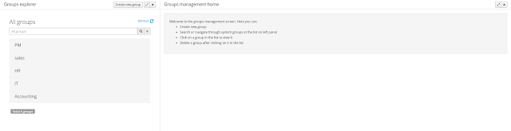 |
| Group management perspective |
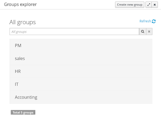 |
| Groups explorer |
- Searching for groups
When specifying the search pattern in the search box the users list will be reduced and will display only the users that matches the search pattern.
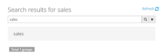
Groups explorer filtered using search Search patterns depend on the concrete security management provider being used by the application’s. Please read each provider’s documentation for more information.
- Create new groups
By clicking on the Create new group button, a new screen will be presented on the center panel to perform a new group creation. Once the new group has been created, it allows to assign users to it:
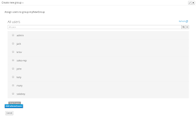
Assign users to the recently created group
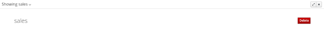 |
| Viewing the sales group |
To delete an existing group just click on the Delete button.

{kind=link}
{kind=link}
{kind=link}
{kind=link}
{kind=link}
{kind=link}
{kind=link}
{kind=link}
{kind=link}
{kind=link}
{kind=link}
{kind=link}
{kind=link}
{kind=link}
{kind=link}
{kind=link}
{kind=link}
{kind=link}
{kind=link}
{kind=link}